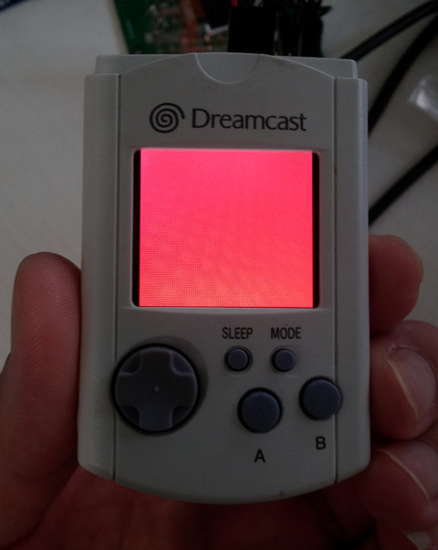

Steward
分享是一種喜悅、更是一種幸福
掌機 - Visual Memory Unit - STM32F103 - 屏幕測試(GPIO)
參考資訊：
http://dmitry.gr/
https://github.com/jahan-addison/snake
https://sourceware.org/binutils/docs/as/ARM-Directives.html
http://www.keil.com/support/man/docs/armasm/armasm_dom1359731157381.htm
main.s
.thumb
.cpu cortex-m3
.syntax unified
.equ GPIOA_CRL, 0x40010800
.equ GPIOA_CRH, 0x40010804
.equ GPIOA_IDR, 0x40010808
.equ GPIOA_ODR, 0x4001080c
.equ GPIOA_BSRR, 0x40010810
.equ GPIOA_BRR, 0x40010814
.equ GPIOA_LCKR, 0x40010818
.equ GPIOB_CRL, 0x40010c00
.equ GPIOB_CRH, 0x40010c04
.equ GPIOB_IDR, 0x40010c08
.equ GPIOB_ODR, 0x40010c0c
.equ GPIOB_BSRR, 0x40010c10
.equ GPIOB_BRR, 0x40010c14
.equ GPIOB_LCKR, 0x40010c18
.equ GPIOC_CRL, 0x40011000
.equ GPIOC_CRH, 0x40011004
.equ GPIOC_IDR, 0x40011008
.equ GPIOC_ODR, 0x4001100c
.equ GPIOC_BSRR, 0x40011010
.equ GPIOC_BRR, 0x40011014
.equ GPIOC_LCKR, 0x40011018
.equ RCC_APB2ENR, 0x40021018
.equ STACKINIT, 0x20005000
.equ DELAY, 8000
.equ BIT_0, 0x0001
.equ BIT_1, 0x0002
.equ BIT_2, 0x0004
.equ BIT_3, 0x0008
.equ BIT_4, 0x0010
.equ BIT_5, 0x0020
.equ BIT_6, 0x0040
.equ BIT_7, 0x0080
.equ BIT_8, 0x0100
.equ BIT_9, 0x0200
.equ BIT_10, 0x0400
.equ BIT_11, 0x0800
.equ BIT_12, 0x1000
.equ BIT_13, 0x2000
.equ BIT_14, 0x4000
.equ BIT_15, 0x8000
.macro set_bits port:req, bits:req
ldr r4, =\port
ldr r5, =\bits
str r5, [r4]
.endm
.macro delay_ms ms:req
ldr r0, =\ms
bl delay
.endm
.macro send_cmd val:req
ldr r0, =\val
set_bits GPIOA_BRR, BIT_7 @ sda=0
bl send_it
.endm
.macro send_dat val:req
ldr r0, =\val
set_bits GPIOA_BSRR, BIT_7 @ sda=1
bl send_it
.endm
.global _start
.section .text
.org 0x0
.word STACKINIT
.word _start
.org 0x100
.align 2
.thumb_func
_start:
bl gpio_init
@ reset lcd
set_bits GPIOA_BRR, BIT_3
delay_ms 100
set_bits GPIOA_BSRR, BIT_3
delay_ms 100
@ init lcd
send_cmd 0x11
delay_ms 120
send_cmd 0x36
send_dat 0x00
send_cmd 0x3a
send_dat 0x05
send_cmd 0x2a
send_dat 0x00
send_dat 0x00
send_dat 0x00
send_dat 0xef
send_cmd 0x2b
send_dat 0x00
send_dat 0x00
send_dat 0x00
send_dat 0xef
send_cmd 0xb2
send_dat 0x0c
send_dat 0x0c
send_dat 0x00
send_dat 0x33
send_dat 0x33
send_cmd 0xb7
send_dat 0x56
send_cmd 0xbb
send_dat 0x1e
send_cmd 0xc0
send_dat 0x2c
send_cmd 0xc2
send_dat 0x01
send_cmd 0xc3
send_dat 0x13
send_cmd 0xc4
send_dat 0x20
send_cmd 0xc6
send_dat 0x0f
send_cmd 0xd0
send_dat 0xa4
send_dat 0xa1
send_cmd 0xe0
send_dat 0xd0
send_dat 0x03
send_dat 0x08
send_dat 0x0e
send_dat 0x11
send_dat 0x2b
send_dat 0x3b
send_dat 0x44
send_dat 0x4c
send_dat 0x2b
send_dat 0x16
send_dat 0x15
send_dat 0x1e
send_dat 0x21
send_cmd 0xe1
send_dat 0xd0
send_dat 0x03
send_dat 0x08
send_dat 0x0e
send_dat 0x11
send_dat 0x2b
send_dat 0x3b
send_dat 0x54
send_dat 0x4c
send_dat 0x2b
send_dat 0x16
send_dat 0x15
send_dat 0x1e
send_dat 0x21
send_cmd 0x51
send_dat 0x20
send_cmd 0xe7
send_dat 0x00
send_cmd 0x29
bl lcd_fill
halt:
b halt
.align 2
.thumb_func
gpio_init:
push {lr}
ldr r0, =0x0000001c
ldr r1, =RCC_APB2ENR
str r0, [r1]
ldr r0, =0x38333333
ldr r1, =GPIOA_CRL
str r0, [r1]
ldr r0, =0x83388338
ldr r1, =GPIOA_CRH
str r0, [r1]
ldr r0, =0xffffffff
ldr r1, =GPIOA_ODR
str r0, [r1]
ldr r0, =0x33383883
ldr r1, =GPIOB_CRL
str r0, [r1]
ldr r0, =0x33333333
ldr r1, =GPIOB_CRH
str r0, [r1]
ldr r0, =0xffffffff
ldr r1, =GPIOB_ODR
str r0, [r1]
pop {pc}
.align 2
.thumb_func
lcd_fill:
push {lr}
send_cmd 0x2c
ldr r4, =240*240
0:
send_dat 0xf8
send_dat 0x00
sub r4, r4, #1
cmp r4, #0
bne 0b
pop {pc}
.align 2
.thumb_func
send_it:
push {lr}
set_bits GPIOA_BRR, BIT_4 @ cs=0
set_bits GPIOA_BRR, BIT_5 @ scl=0
set_bits GPIOA_BSRR, BIT_5 @ scl=1
ldr r3, =8
0:
set_bits GPIOA_BRR, BIT_5 @ scl=0
and r1, r0, #0x80
cmp r1, #0x80
bne 1f
set_bits GPIOA_BSRR, BIT_7 @ sda=1
b 2f
1:
set_bits GPIOA_BRR, BIT_7 @ sda=0
2:
lsl r0, r0, #1
set_bits GPIOA_BSRR, BIT_5 @ scl=1
sub r3, r3, #1
cmp r3, #0
bne 0b
set_bits GPIOA_BSRR, BIT_4 @ cs=1
pop {pc}
.align 2
.thumb_func
delay:
push {lr}
0:
ldr r1, =DELAY
1:
sub r1, #1
cmp r1, #0
bne 1b
sub r0, #1
cmp r0, #0
bne 0b
pop {pc}
.end
main.ld
MEMORY
{
RAM (xrw) : ORIGIN = 0x20000000, LENGTH = 20K
FLASH (rx) : ORIGIN = 0x8000000, LENGTH = 128K
}
SECTIONS
{
.text : {
*(.text)
} >FLASH
.bss : {
*(.bss)
} >RAM
.data : {
*(.data)
} >RAM
}
Makefile
all: arm-none-eabi-as -ggdb -mcpu=cortex-m3 -mthumb -mthumb-interwork -o main.o main.s arm-none-eabi-ld -T main.ld -o main.elf main.o arm-none-eabi-objcopy -O binary main.elf main.bin flash: sudo openocd -f /usr/share/openocd/scripts/interface/stlink-v2.cfg -f /usr/share/openocd/scripts/target/stm32f1x.cfg -c "program main.bin reset exit 0x8000000" debug: sudo openocd -f /usr/share/openocd/scripts/interface/stlink-v2.cfg -f /usr/share/openocd/scripts/target/stm32f1x.cfg -c "program main.bin halt 0x8000000" clean: rm -rf main.o main.elf main.bin
完成
